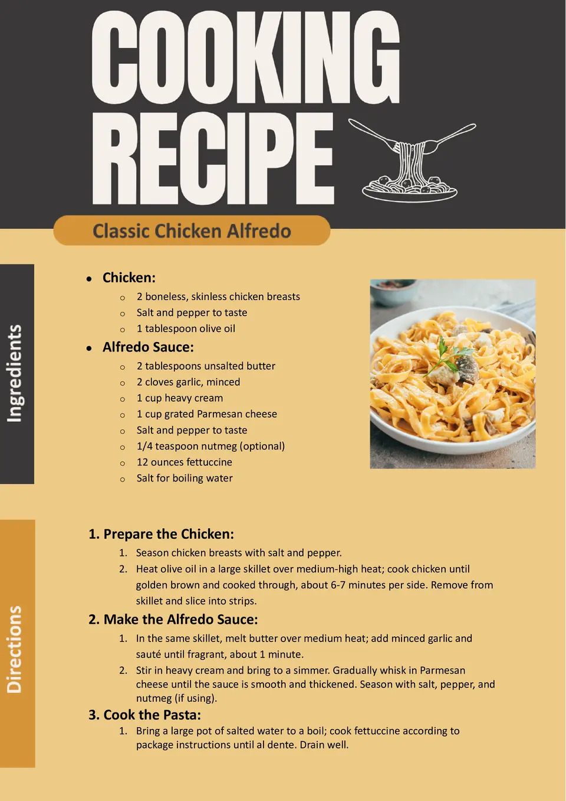

Recipe Presentation

Creating Visually Stunning Recipes
Good presentation makes your dish look as amazing as it tastes. Follow these tips to elevate your plating skills:
- Plan the Plate: Think about how to arrange the dish to make it visually balanced and appealing.
- Garnishing: Use garnishes like fresh herbs, edible flowers, or citrus slices to add color and texture.
- Contrast and Color: Combine vibrant and contrasting colors to make the dish pop (e.g., pair red tomatoes with green basil).
- Saucing Techniques: Drizzle or smear sauces artistically around the plate for a professional look.
- Symmetry and Layers: Use symmetry for clean arrangements or stack ingredients to create height.
Pro-Level Presentation Tips
- White Plates: Use white plates as they provide a neutral background to make food colors stand out.
- Textures: Add crunch or softness to a dish for a dynamic visual and sensory experience.
- Serving Sizes: Keep portions proportional for an aesthetically pleasing balance.
Remember, food presentation is an art that enhances the dining experience. Practice and creativity are key to mastering it!